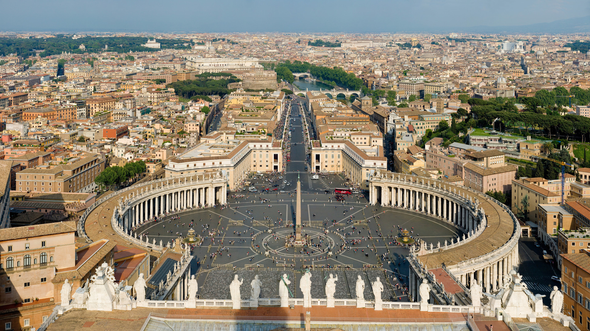
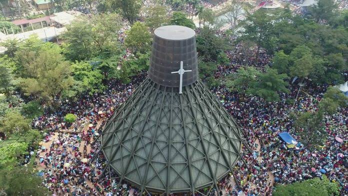

I would like to visit the Rome, the capital city of Italy. This is because Rome brims with ancient
history.
I would like to see the historical sites like the Colosseum, St Peter's Basilica, the Vatican and many
other sites. It will also be amazing to see Rome's amazing Architectutre.
Rome is said to has 280 fountains and more than 900 churces mostly built during the old ages.
The ancient Romans built an amazing road network of 53,000 miles by the early fourth century.
German is one of the foreign language I would like to learn.
This would be so helpful since I have got a few extended family members who are German.
It will be amazing to have a great conversation with them. To mention the least but a few, German is also mostly
widely spoken language in Europe.
And for someone like myself who wants to expand my horizons it will come in handy.
Uganda Martyrs Shrine

The Uganda Martyrs Shrine is one of the largest christian pilgrimage destination in Uganda.
It is dedicated to the 22 Uganda martyrs who were martyred between 1885 and 1887.
This was at the hand of Kabaka Mwanga II the king of Buganda.
Buganda Palace
The Buganda Palace is the main royal residence of the Kabaka (king) of Buganda.
It was constructed in 1885 and seated on 2.3 square kilo meters.
The palace is located on Mengo hill one of the 7 hills that make up Kampala city.
Kasubi Royal Tombs
Kasubi Tombs is the site of the Buganda kingdom burial grounds for the kabakas and royal members.
The site is an important spiritual and political site for the Baganda people.
It is also a significant symbol of culture as well as traditional architecture.